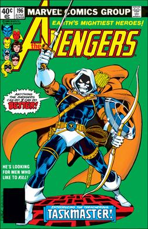

Taskmaster

Creation
Taskmaster's first appearance was in The Avengers #195 in May 1980. He was created by David Michelinie and George Perez.
Origins
Taskmaster is a villain, usually depicted as a mercenary, who has photographic reflexes which allow him to mimic and fighting style that he has witiness, such as Captain America, Spider-Man, and many many more. He is usually hired by criminal organizations to fight superheroes.
Different versions of Taskmaster
Different variations include:
- Taskmaster - Earth 616
- Taskmaster - Marvel's Spider-Man PS4
- Taskmaster - Marvel's Avengers video game
- Olga Kurylenko - MCU Taskmaster